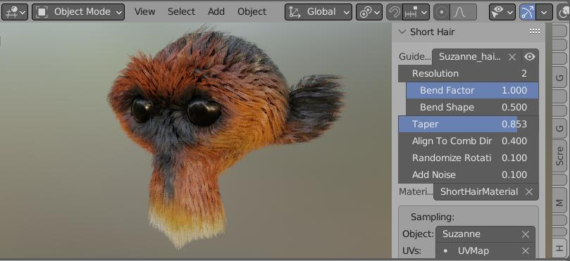
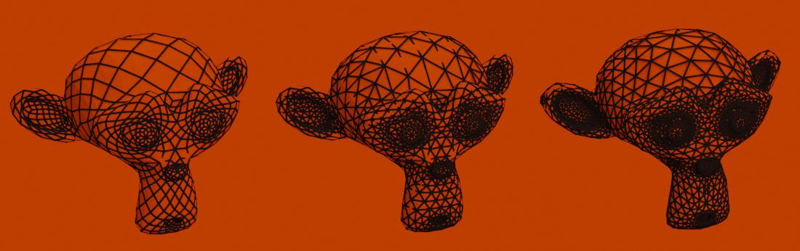
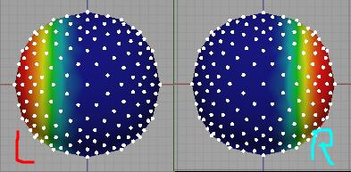
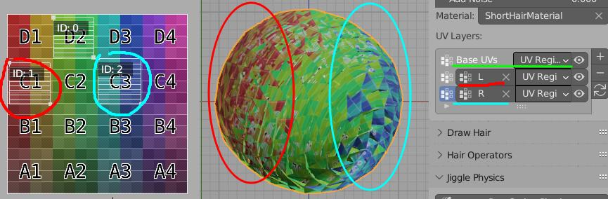

Short Hair Modeling Tool¶
In this modeling technique we are instancing haircards on mesh edges (haircard count will be the same as character mesh edges count). Useful for creation of fur.
Note Short Hair modeling requires Blender 3.3 or above.
The main advantages:
- easy to setup - one click solution
- easy to tweak with blender sculpting tools (or with poly modeling)
- haircards distribution based on source character mesh topology - you will automatically get denser hair in more important areas: head, hands (but this can be con - depending on situation)

The main cons:
- no easy way to control density - since density is based on source character mesh topology (you cant drive it with e.g. vertex group)
- hair source mesh has to have same topology as hair guide mesh. This mean you may have to start combing from scratch if change base mesh topology (but there is workaround I will show later)
Note: You can tweak haircards density by changing base mesh topology - eg. by using remesh modifier or adaptive tessellation in blender sculpt mode.
How To use¶
- Select your character. Let's assume it is named: Body

- Use Ctrl+Shift+H menu -> 'Setup Short Hair'
- Alternatively you can use: right sidebar (N key) -> Hair Tool Tab -> Short Hair panel -> 'Setup Short Hair'
- Two new objects will be added: Body_short_hair (hair object) and Body_hair_guide (drawn as bounding box)
- Select hair guide object (bounding box) and go into sculpt mode
- that is it, you can now sculpt hair by sculpting guide mesh (polygonal modeling can be used too)
Note To finalize Short hair use 'Convert Short Hair to Mesh' from Hair Tool Ctrl+Shift+H menu. This will correctly tranfser UVs from modifier to mesh data
Remeshing Modes:¶
When you use 'Setup Short Hair' operator, you will have option to remesh base geometry (or leave it as it is). Since haircards are spawned on each mesh edge, then source mesh topology has big influence on Short Hair look
 Three main modes of remeshing starting from left: Diamonds, Triangulated Diamonds, Triangulated Cells
Base Suzanne is made from around 1000 edges. Meaning Short Hair will spawn 1000 haircards (planes or ribbons)
- Diamond Topology will create 2000 edges
- Diamond Triangulated will create 3000 edges
- Triangulated Cells will output 4600 edges!
Cells remeshing - gives highest poly-count but the resulting topology is organic and thanks to this haircards will also be distributed in natural way. Diamonds topology, on the other hand, has visible repeating pattern and it may show through on generated haircards. Triangulation of Diamonds helps slightly, but it is not as good as Cells Topology
Note 1: If you want denser haircards you can add subdivision modifier to your base mesh, but resulting edges count will quadruple
Note 2: I did not test it, but using Dynotopo topology from sculpt mode may actually be nice way to get organic and controllable mesh
Defining UVs¶
UV workflow for Short Hair is similar to Curve UVs.
- Select Short Hair object
- open UV Image Editor and press ‘Hair UV’ button located in top header bar - on far right
- then draw UV boxes like it is shown in Defining UVs.
- The only difference, compared to curves, is that UV mirroring is automatically enabled.
Uv Region defined above can be distributed/assigned to hair-cards in two ways - using Vertex Groups as UV mask, or manually.
Manual UV assignment¶
You can manually select mesh parts and assign uv regions to it Set UV Region:
- Select Short Hair object, and go into Edit Mode (using Tab key)
- Select edges for which you want to assign new UV regions
- Use Ctrl + Shift + H menu -> Set UV Region, and pick UVs that you want to assign to selection.
- Short Hair Cards generated at these edges will receive new UVs.
Set UVs using Vertex Groups¶
Semi-automatic way of assigning UVs using Vertex groups (access from right Sidebar -> Hair Tool Tab -> Short Hair panel)
 We have [L]eft and [R]ight vertex groups. We can use these to assign different UV regions
 With above setup, UV_1 region will be assigned to hair-cards on [L]eft, and UV_2 region on [R]ight
Note: First entry (Base UV) in vert Group layers is always used as 'Background' layer - meaning UV regions assigned to it, will be distributed on whole character body. Following vertex groups will cover this base layer, with theirs own UV regions.
Parameters:¶
You can change Short Hair parameters by going into modifiers tab.
Use Guide Object - You may want to use the modifier without Hair Guide object. This boolean parameter helps to turn off Guide object, without breaking modifier behavior
Guide Object - Haircards will follow Guide Object deformations. It does not matter if you modify Deformer object in sculpt mode or in Edit mode, but you can't change Deformer object topology. Deformer object topology has to be the same as base hair object, but shape can (and should) be different. In video above all modification performed on Deformer object are stored in Shape Key - this gives you more control on the shape of the mesh in non destructive way
Strand Resolution - Add additional subdivision along strands length
Placement Mask - select vertex group to mask the Short Hair effect
Puff - Push hair outside of surface. Helps to draw haircards when guide mesh is exactly the same as base mesh, thus haircards would have zero length and they would be invisible
Bend Factor - Make strands straight (0) or bent (1). Works only when segments count is bigger than 1
Bend Shape - Bending is happening mostly on roots (0) or at tips (1) of hairstrands. Works only when segments count is bigger than 1, and Bend Factor is non zero
Length Multiplier - Additional multiplier to hairstrands length. It affect longest strands the most. Use value below 1 to shorten the hairstrands
Length increase - Add length to hairstrands in uniform way. It affect all strands the same
Length Unify - Equalize strands lengths. Affect the shortest strands the most, meaning shorter strands will get longer until they match longest stands length
Length Randomize - Randomize strands lengths
Noise - Helps to break the even look of haircards
Coloring Strands¶
Short Hair cards can be colored using vertex color or texture from character body. Both method require setting 'Sampled Object' input - from which we will pick color or/and uv data.
Using Sampled Vert Color¶
- Sampled Color - Enter vert color name from sampled base mesh (usually character object) to generate Vert Color layer named SampledCol - it can be used to tint the hair color*
Using Sampled UV's¶
- Sampled Color - Enter UV name from sampled base mesh (usually character object) to generate uv layer named SampledUV - it can be used to tint the hair color*
FAQ¶
How setup uniform hair density?¶
You can use remesh modifier to make the base topology even. Generating Short Hair from that should give uniform look
I need denser hair¶
There is no way to control Short Hair density. But you can add subdivision modifier to increase the density. This will however bump up haircards count Four Times, for each subdivision.
Note 1 You have to add subdivision modifier to both Body (above Short Hair mod), and Hair Deformer object or Short Hair won't work correctly.
Note 2 You can also try using Dyntopo in Blender sculpting mode, to add more geometry in places where you want more hair
I want to use UVs/Weights from my base mesh on Hair¶
Use Data Transfer modifier, after you finalized your Short Hair.